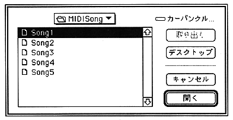

Return to previous page ｜ Return to menu ｜ Go to next page
- New
- Select when creating a new map.
- Open...
- Select to open a map that has already been created.
- Close
- Select to close the map being edited. The simulator will not exit.
- Save
- Select to save the map being edited.
- Save as...
- Select to save the map being edited with a different name.
- Save Binaly File
- Select this when creating a binary format (data to be actually sent to the target) of the file currently being edited.
- Open Collect List
- Open the collect list file.
When you select Open Collect List, the following dialog box opens.

The existing collect list file is displayed.
A collect list is a collection of multiple file names that saves you the trouble of selecting a file each time. Used when converting standard MIDI files and creating sequence banks. The file opened here contains both of the above two types of collect lists.
- Save Collect List
- Saves the currently active collect list file.
- Save Collect List As...
- Saves the currently active collect list file with a different name.
- Open FunctionKey
- Recalls the saved function key setup settings.
- Save FunctionKey
- Saves all settings made with function key setup.
Return to previous page ｜ Return to menu ｜ Go to next page